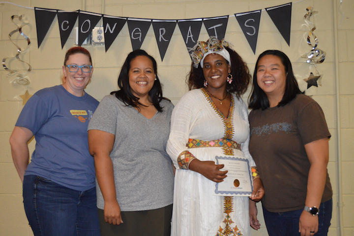
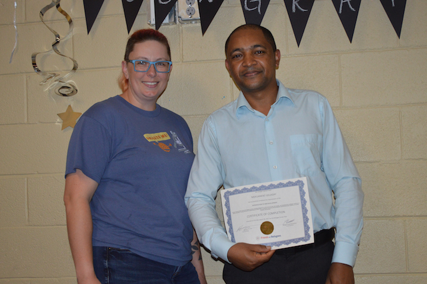

Volunteers are the reason that any of the Refcode students succeed--both in the short term and in the long term. For every student who graduates, there is a whole team of volunteers who gave freely of their time, knowledge, expertise, and social capital in order to improve the life of someone who came into this country at a disadvantage.

Sintayehu and a few of the volunteers who helped her as TAs and tutors: Shanna, Jocelyn, and Yen.
Selamu and a few of the volunteers who helped him as TAs and tutors: Jocelyn, Yen, and Cole.

Meku at graduation with Shanna, a one of the volunteers who most closely as a TA.
Yohannes at graduation with Shanna and Jocelyn, some of the volunteers who helped him as a TAs and tutors.
Class TA
Each class contains intensive workshops for students to learn how to use their computers, the internet, and specialized tools in advanced ways. Because students are coming from a range of backgrounds, they need a lot of help from Teacher's Assistants who are more comfortable using a computer, installing programs, managing account creation, sign ups, "forgot password" emails, and the like.
Class TAs do not need to already be familiar with code (though that helps) as long as they are good with computers and quick to pick up new things. They can learn as they go and try to stay a step ahead of the students, just enough to be able to help with the current task on hand.
TA requirements are:
The commitment is 3 hours per week on the night of the class, but TAs are encouraged to monitor our chat room (Slack) to help answer questions students have throughout the week.
TAs need to be good with computers and quick to learn. Previous coding experience is a benefit.
TAs need to complete a Friends of Refugees orientation and a background check.
If you are interested in volunteering to become a TA, please fill out this form.
TA Application Form
Tutor
Tutors meet one-on-one with a refugee student for one hour per week outside of class. The time and place can be anywhere that works for both the student. If you meet at Refuge Coffee then Friends of Refugees will pay for both the student and the tutor's drinks.
Tutors are not required to go to class (though they are always welcome to). An outline of what was covered in the previous class as well as what homework the student is working on that week will be provided for the tutor to go over before meeting with the student.
Tutoring sessions are flexible and can cover just about anything that the student needs help with. That may include class-related thigns like catching up on things that the student wasn't able to complete during class, working on their assigned homework, working on the course project (personal website) or exploring some code skill or technology that the student has found on their own and is interested. It may also mean working on things not related to class directly, such as giving career advice, helping the student connect with people and network, answering questions about American culture, helping with English, or improving their resume. The primary purpose of the tutoring sessions is to help students succeed in the class, but it is also an opportunity to connect to the refugee and support them as a friend.
Tutor requirements are:
The commitment is 1 hour per week but tutors are encouraged to stay in contact with the student throughout the week via email, chat (Slack) or other online methods.
Tutors are not required to attend class, however if tutors don't come to class they should be have some experience coding so that they will be able to help even without the context provided by class.
Tutors should review the class outline and homework before meeting with the student.
Meeting time is flexible: any time outside of class that works for the student.
Meeting location should be somewhere convenient for the student: probably Clarkston. (Refuge Coffee is a great location and they will pay for both of your drinks if you let them know you're with the Friends of Refugees career coaching program.)
Tutors need to complete a Friends of Refugees orientation and a background check.
If you are interested in volunteering to become a tutor, please fill out this form.
Tutor Application Form
Mentor
After graduation, we don't want to leave students totally on their own. Each graduate is matched with a mentor who they will continue to meet with once per month for at least six months. The mentorship is an extended relationship that gives graduates the opportunity to have additional guidance, advice, help, and networking opportunities.
Mentors have worksheets to go through at each monthly meeting and are encouraged to stay in touch with their mentee as much as possible.
Mentor requirements are:
Must commit to meeting mentee once per month for at least six months.
Mentors keep in touch with their mentees via email, text, etc.
.
Attend the Friends of Refugees orientation and complete a background check.
Attend the Career Hub mentorship training program.
If you are interested in volunteering to become a mentor, please fill out this form.
Mentor Application Form
Refcode Extended Network Member
Refugees come to the US with many disadvantages, but one of the biggest is their lack of a professional network. By stepping forward to connect with these refugees, you are extending their networks as far as yours go.
There may be employers in Atlanta who are looking for someone exactly like one of our graduates, yet their job posting, advertisements, and word-of-mouth searches would fail to ever reach the refugee who is perfect for the job. As a member of the Refcode Extended Network, it's your job to keep your ear open for opportunities that might be perfect for one of our graduates, and pass along the info so that the connection is made. Additionally, if you meet someone who is a hiring manager, or who owns a small buisnesss, or who is a recruiter for a tech company (etc.) then you can mention our graduates or ask questions to see if they might be looking to hire someone.
Obviously you will need to know a little about our graduates and what their qualifications are, so part of being in the Refcode Extended Network is reading the emails that are sent out and keeping up to date on what our various graduates are up to, professionally, what projects they're working on, and what type of employment they're seeking.
Refcode Extended Network Member requirements are:
Read occasional emails with updates about Refcode graduates.
Keep an ear out for opportunities that might be a good fit for Refcode graduates.
.
To join the Refcode Extended Network, please fill out this form.